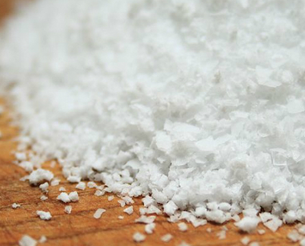
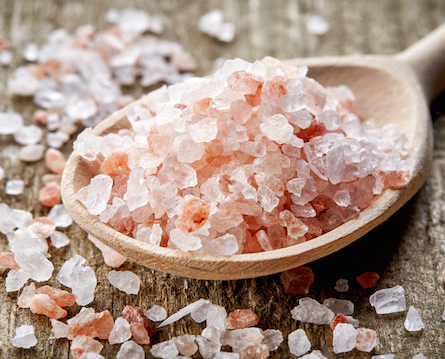
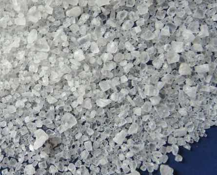

Soľ je chemická zlúčenina taktiež nazývaná chlorid sodný - NaCl. V pomere však obsahuje 40% sodíka a 60% chlóru. Práve pre pomer sodíka je soľ je aj jeho najbohatším potravinovým zdrojom. Látky obsiahnuté v soli sú pre ľudské telo dôležitými elektrolytmi. Pomáhajú udržiavať rovnováhu vody a iónov, zabezpečovať prenos nervových vzruchov a správnu funkciu svalov. Niektoré druhy soli môžu obsahovať stopové množstvá Ca, K, Fe a Zn. V mnohých krajinách sa do soli pridáva jód.
Soľ je obsiahnutá vo väčšine potravín, ktoré jeme. Často ju pridávame do jedál pre zlepšenie chuti. Pôvodne však soľ slúžila na konzervovanie a uchovávanie potravín, keďže vysoké množstvo soli bráni rastu baktérií, ktoré spôsobujú kazenie jedla. Existuje viacero druhov solí, s ktorými sa môžeme bežne stretnúť. Pozrieť si ich môžeme v tabuľke nižšie:
| Kuchynská (stolová) soľ | Himalájska (ružová) soľ | Morská soľ |
|---|---|---|
|  |  |  |
Späť na domovskú stránku